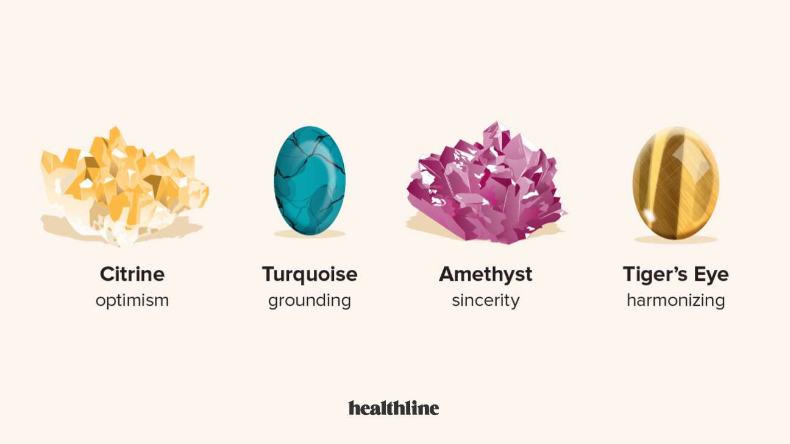

Crystal Benefits for Emotional Well-Being
Crystals can be powerful tools for enhancing emotional well-being by promoting balance, reducing stress, and encouraging positive energy. Many people use crystals like amethyst to calm the mind, ease anxiety, and support emotional clarity, making them useful for meditation and relaxation. Rose quartz, often called the "stone of love," is believed to foster self-love, compassion, and healthier relationships by opening the heart to positivity. Citrine is known for its uplifting energy, helping to boost confidence, motivation, and joy, which can be beneficial for those struggling with self-doubt or negativity. Crystals like black tourmaline and smoky quartz are thought to absorb negative energy, creating a sense of protection and stability during times of emotional turmoil. By incorporating crystals into daily life—whether through meditation, wearing them as jewelry, or placing them in a living space—many individuals find comfort, strength, and a deeper sense of inner peace. Even if their effects are based on personal belief, the practice of using crystals can serve as a meaningful tool for self-care and emotional healing.
Crystal Benefits for Physical Health
Crystals are often used in alternative healing practices to support physical health by promoting balance and energy flow in the body. Many people believe that different crystals can aid in pain relief, boost the immune system, and improve overall well-being. For example, amethyst is thought to help with headaches and improve sleep by calming the nervous system, while turquoise is believed to support respiratory health and reduce inflammation. Clear quartz, often called the "master healer," is said to amplify energy and assist with overall vitality. Black tourmaline is commonly used for protection against electromagnetic radiation, which some believe can contribute to fatigue and stress. Hematite is associated with improving circulation and supporting blood health, making it a popular choice for those dealing with anemia or low energy levels. While scientific evidence on crystal healing remains limited, many individuals report feeling more balanced and energized when using them in combination with other wellness practices like meditation, massage, or Reiki. Whether through the placebo effect or genuine energetic influence, crystals continue to be valued for their potential benefits in physical healing.
Crystals That Can Improve Emotional Well-Being
- Rose Quartz
- Amethyst
- Lepidolite
- Citrine
- Carnelian
Crystals That Can Improve Physical Health
- Rose Quartz
- Hematite
- Turquoise
- Garnet
- Jade